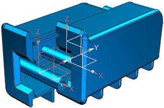

Estimated time to complete: 1–1 minutes
In this activity, you will use the Wave Geometry Linker to create a mirror part twice: first as a position-dependent linked object and then as a position-independent linked object. You will reposition each mirror part at the assembly level to compare the differences.

Open the Position independent linked object activity.